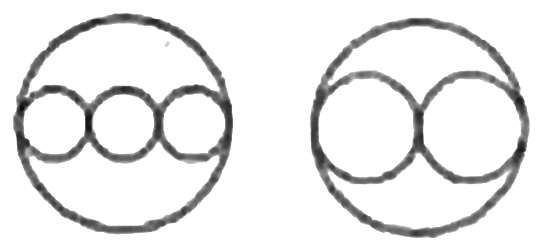

השאלה לא צולמה. היא בעמוד 139 בספר. אפשר לצלם את העמוד ולהוסיף אותה.
התשובה לפי המפתח: (2)
השאלה לא צולמה. היא בעמוד 139 בספר. אפשר לצלם את העמוד ולהוסיף אותה.
התשובה לפי המפתח: (2)
השאלה לא צולמה. היא בעמוד 139 בספר. אפשר לצלם את העמוד ולהוסיף אותה.
התשובה לפי המפתח: (3)
השאלה לא צולמה. היא בעמוד 139 בספר. אפשר לצלם את העמוד ולהוסיף אותה.
התשובה לפי המפתח: (3)
לבית הספר רוגוזין יש נבחרת אתלטיקה בה 4 ספורטאים שמתחרים בתחרות קפיצה לרוחק. המרחק הממוצע של הנבחרת הוא 6.24 מטר. המאמן החליט להדיח מהקבוצה את איתי שמרחקו הממוצע 6.12 מטרים.
מה יהיה כעת הממוצע של הנבחרת לאחר עזיבתו של איתי?
התשובה הסופיתתשובה (3)6.28
סכום 4 · 6.24 = 24.96. בלי איתי: 18.843 = 6.28.
לחשב סכום כולל לפני שמחסירים את איתי.
נבדקהפתרון תואם את מפתח התשובות של הספר.
נתון: x מספר טבעי, y שבר חיובי.
איזה מהאי־שוויונות הבאים אינו נכון?
התשובה הסופיתתשובה (4)y1x < y ⚠
0 < y < 1 ו־1x ≤ 1 ⇒ y1x ≥ y, לכן (4) לעולם לא נכון.
0 < y < 1 ⇒ חזקה קטנה יותר נותנת ערך גדול יותר.
נבדקהפתרון תואם את מפתח התשובות של הספר.
המעריכים קטנים ונקראו בקירוב; תואם את המפתח.

בסרטוטים שלפניכם שני מעגלים החופפים זה לזה. בתוך כל אחד מהמעגלים חסומים מעגלים קטנים זהים המשיקים זה לזה, משיקים למעגל הגדול ומרכזיהם מונחים על הקוטר של המעגל הגדול בו הם חסומים.
על פי נתונים אלו ונתוני הסרטוט, מה מהבאים נכון בהכרח?
התשובה הסופיתתשובה (2)סכום ההיקפים של שני המעגלים הקטנים החסומים במעגל שווה לסכום ההיקפים של שלוש המעגלים הקטנים החסומים במעגל
שני מעגלים: רדיוס R2 ⇒ 2 · πR = 2πR. שלושה מעגלים: רדיוס R3 ⇒ 3 · 2πR3 = 2πR. שווים.
סכום ההיקפים תמיד 2πR.
נבדקהפתרון תואם את מפתח התשובות של הספר.
בתערוכת אופנה ל־⅓ מהדוגמניות יש שיער בלונדיני, ול־⅔⚠ יש עיניים ירוקות. מירי היא הדוגמנית היחידה בעלת שיער בלונדיני ועיניים ירוקות. אם בתערוכה 30 דוגמניות, מהו המספר הגדול ביותר האפשרי של דוגמניות להן שיער שחור ועיניים כחולות?
התשובה הסופיתתשובה (2)1
בלונדיניות 10, ירוקות עיניים 20, רק מירי בשתיהן. 9 + 19 + 1 = 29 ⇒ לכל היותר 1 בלי אף תכונה (שיער שחור ועיניים כחולות).
לספור את מירי פעם אחת בלבד.
נבדקהפתרון תואם את מפתח התשובות של הספר.
נתון: x הוא מספר תלת־ספרתי שמכפלת ספרותיו שווה ל־70. מהו ההפרש המקסימלי שיתכן בין שני מספרים תלת־ספרתיים המקיימים תנאי זה?
התשובה הסופיתתשובה (4)495
70 = 2 · 5 · 7 – הפירוק היחיד לשלוש ספרות. מקסימום 752, מינימום 257 ⇒ 495.
המינימום הוא 257, לא 275.
נבדקהפתרון תואם את מפתח התשובות של הספר.
n מספר דו־ספרתי שלם הגדול מ־30 וקטן מ־40. נתון: n² − 1 מתחלק ב־10.
מה מהבאים נכון בהכרח?
התשובה הסופיתתשובה (3)ישנם שני ערכים אפשריים עבור n
n² ≡ 1 (מודולו 10) ⇒ n מסתיים ב־1 או 9 ⇒ 31 או 39. שני ערכים.
39 אינו ראשוני.
נבדקהפתרון תואם את מפתח התשובות של הספר.
על פיסת נייר שצורתה ריבוע העבירו קו ישר, וקיפלו את הנייר לאורך הקו הזה.
איזו מהצורות הבאות אינה יכולה להתקבל?
התשובה הסופיתתשובה (4)כל אחת מהתשובות יכולה להתקבל
קיפול לאורך אלכסון ⇒ משולש. לאורך קו אמצע ⇒ מלבן. לאורך קו שחותך פינה ⇒ מחומש. כולן אפשריות.
קיפול פינה נותן מחומש.
נבדקהפתרון תואם את מפתח התשובות של הספר.
אין במקבץ הזה שאלות שמתאימות לסינון.